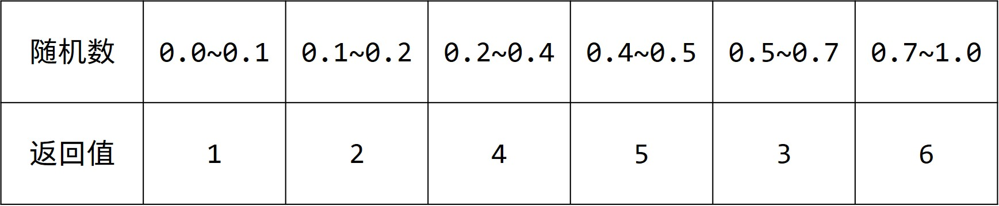

© 2019 《算法（第四版）》C# 题解 | Provided By 沈星繁
搜索解答
目前已完成到 3.1
2.4.35
上次更新：2019-04-17
发现了题解错误/代码缺陷/排版问题？请点这里：如何：提交反馈 。
解答
本题有两个翻译错误。random() ——返回索引 i 的概率是 p[i]/T，而非返回概率和索引。（return an index i with probability p[i]/T）
最后一句指的是像堆那样使用数组而非显式指针实现二叉树。（Avoid explicit pointers, as we do for heaps.）
提示已经给出了实现方案，我们用一个例子来简单说明一下。
现在给出一个分布 p，总和 T=1，如下图所示：
为了实现这样的随机分布，我们在 0~T 之间随机一个小数，然后根据结果返回不同的值。
现在我们将这个思想应用到完全二叉树上。
每次随机的过程其实构成了一棵选择树，我们把数组 p 当作一棵树，如下图：
为方便起见，我们重新排列一下之前的随机表：

每个值的概率并没有改变，只是每个值对应的区段换了一下。
经过这样的变换后，你会发现，如果从根结点的角度看：
如果随机的值小于 0.1，对应的编号就是 1。
如果随机的值大于 0.5，那么对应编号只能是 3 或 6，即根结点的右子树。
其他情况对应编号在左子树上。
扩展到一般情况，就变成了：
如果随机数小于当前结点，直接返回当前结点的编号。
如果随机数大于左子树权值总和+当前结点的权值，减去它们，移动到右子树。
其他情况减去当前结点的权值并移动到左子树。
思想理解之后，代码实现就比较容易了，做了 100000 次实验的结果如下：
代码
using System;
namespace _2._4._35
{
/// <summary>
/// 离散分布的取样。
/// </summary>
class Sample
{
public double[] P;
public double[] SumP;
private double T = 0;
private Random random = new Random();
/// <summary>
/// 构造一个离散取样类。
/// </summary>
/// <param name="data">取样数据。</param>
public Sample(double[] data)
{
// 复制权重
this.P = new double[data.Length + 1];
for (int i = 1; i <= data.Length; i++)
{
this.P[i] = data[i - 1];
this.T += data[i - 1];
}
// 记录子树权重之和
this.SumP = new double[data.Length + 1];
for (int i = data.Length; i / 2 > 0; i--)
{
this.SumP[i / 2] += this.P[i];
}
}
/// <summary>
/// 根据构造时给定的取样概率返回索引。
/// </summary>
/// <returns></returns>
public int Random()
{
double parcentage = this.random.NextDouble() * this.T;
int index = 1;
while (index * 2 <= this.P.Length)
{
// 找到结点
if (parcentage <= this.P[index])
break;
// 减去当前结点，向子结点搜寻
parcentage -= this.P[index];
index *= 2;
// 在左子树范围内
if (parcentage <= this.SumP[index] + this.P[index])
continue;
// 在右子树范围内，减去左子树
parcentage -= this.SumP[index] + this.P[index];
index++;
}
return index - 1;
}
/// <summary>
/// 修改索引 <paramref name="i"/> 的权重为 <paramref name="v"/>。
/// </summary>
/// <param name="i">需要修改的索引。</param>
/// <param name="v">新的权重。</param>
public void Change(int i, double v)
{
i++;
this.P[i] = v;
// 重新计算总和
while (i > 0)
{
i /= 2;
this.SumP[i] = this.P[i * 2] + this.SumP[i * 2];
if (i * 2 + 1 < this.P.Length)
this.SumP[i] += this.P[i * 2 + 1] + this.SumP[i * 2 + 1];
}
}
}
}